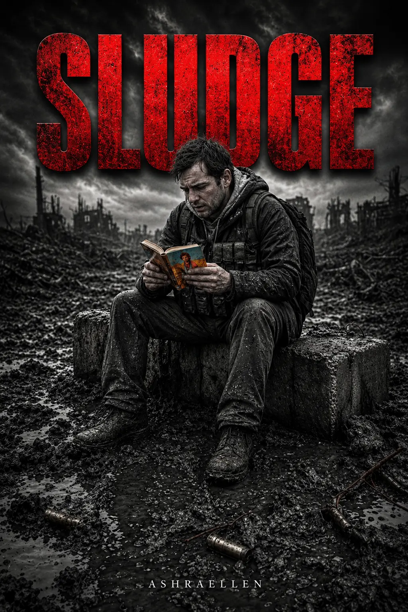

SLUDGE
Volumen II de la trilogía MONOLITH.
Expediente
Volumen II

El ser humano no se rompe de inmediato. Primero se cansa de resistir. Luego empieza a aceptar.
EXPEDIENTE № 2026-001B. Índice: 6666548A. ESTADO: Alto secreto.
Descripción
sobre el libro
SLUDGE es una distopía filosófica, thriller psicológico y ciencia ficción social sobre un mundo donde el ser humano deja de ser persona y se convierte gradualmente en material del entorno. Es el segundo volumen de la trilogía MONOLITH y la etapa de descompresión de la realidad.
Si BETON era la historia de un sistema que se endureció demasiado rápido, SLUDGE cuenta lo que ocurre después de la primera grieta. La estructura ya no solo presiona desde fuera; empieza a procesar al ser humano desde dentro.
La violencia no siempre llega como un golpe. Actúa mediante el lenguaje, el ritual, el cansancio, el hambre, el procedimiento, la costumbre y el consentimiento gradual. Aquí no se rompe a la persona de inmediato. Primero se la ablanda.
SLUDGE es una historia de desintegración de la personalidad, control de la conciencia, adiestramiento social, pérdida de memoria y complicidad forzada en un mundo donde la deformación acaba siendo aceptada como norma.
“Mientras una persona es sólida, solo protege su forma. Cuando la forma empieza a separarse, se ve de qué está hecha.”
La edición en español está en preparación. Actualmente está disponible la edición en inglés.
 — marca de presencia
— marca de presencia